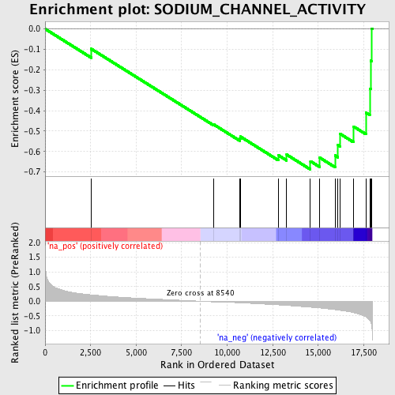
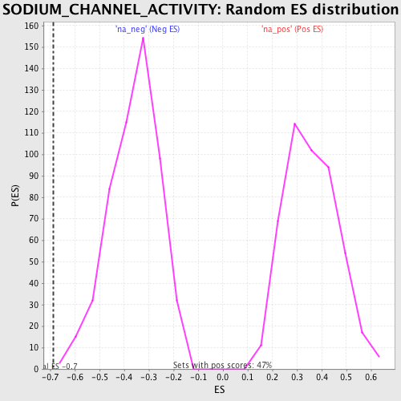

| | | Dataset | GSEA_Cushing_prerank_FC |
| Phenotype | NoPhenotypeAvailable |
| Upregulated in class | na_neg |
| GeneSet | SODIUM_CHANNEL_ACTIVITY |
| Enrichment Score (ES) | -0.6878133 |
| Normalized Enrichment Score (NES) | -1.9130527 |
| Nominal p-value | 0.0018761726 |
| FDR q-value | 0.06786841 |
| FWER p-Value | 0.184 |
Table: GSEA Results Summary

Fig 1: Enrichment plot: SODIUM_CHANNEL_ACTIVITY
Profile of the Running ES Score & Positions of GeneSet Members on the Rank Ordered List
| PROBE | GENE SYMBOL | GENE_TITLE | RANK IN GENE LIST | RANK METRIC SCORE | RUNNING ES | CORE ENRICHMENT | | 1 | SCN9A | | | 2534 | 0.219 | -0.0976 | No |
| 2 | CACNA1S | | | 9266 | -0.022 | -0.4680 | No |
| 3 | PKD2 | | | 10690 | -0.055 | -0.5362 | No |
| 4 | SCN7A | | | 10729 | -0.057 | -0.5271 | No |
| 5 | SCN4B | | | 12808 | -0.125 | -0.6180 | No |
| 6 | SHROOM2 | | | 13271 | -0.143 | -0.6152 | No |
| 7 | SLC4A11 | | | 14576 | -0.203 | -0.6475 | Yes |
| 8 | SCN5A | | | 15067 | -0.230 | -0.6290 | Yes |
| 9 | SCNN1G | | | 15929 | -0.289 | -0.6196 | Yes |
| 10 | SCNN1B | | | 16088 | -0.301 | -0.5686 | Yes |
| 11 | SCN1B | | | 16194 | -0.310 | -0.5129 | Yes |
| 12 | SCNN1D | | | 16940 | -0.388 | -0.4773 | Yes |
| 13 | SCN2B | | | 17623 | -0.532 | -0.4097 | Yes |
| 14 | SCN4A | | | 17837 | -0.650 | -0.2923 | Yes |
| 15 | SCN11A | | | 17887 | -0.701 | -0.1558 | Yes |
| 16 | SCN2A | | | 17942 | -0.809 | 0.0019 | Yes |
Table: GSEA details [plain text format]

Fig 2: SODIUM_CHANNEL_ACTIVITY: Random ES distribution
Gene set null distribution of ES for SODIUM_CHANNEL_ACTIVITY